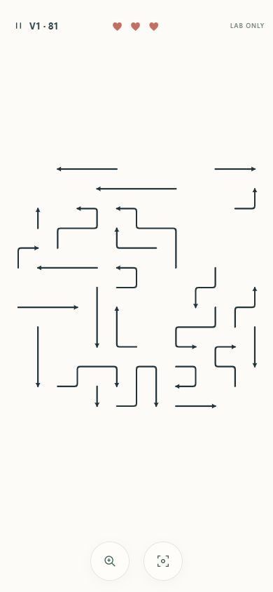
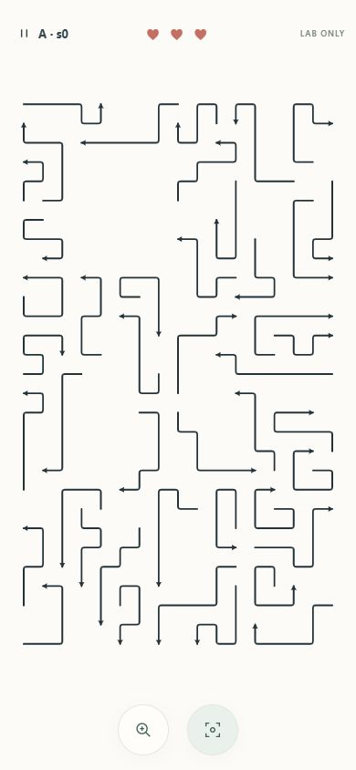
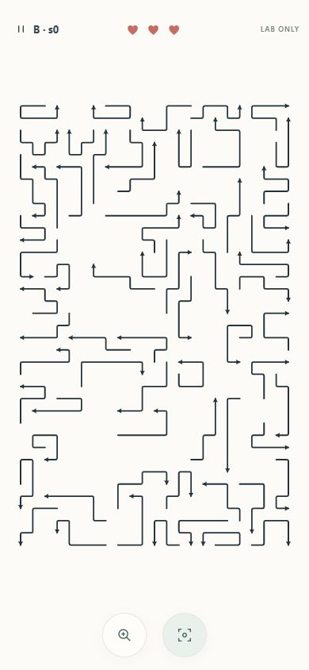
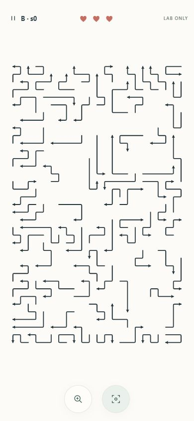
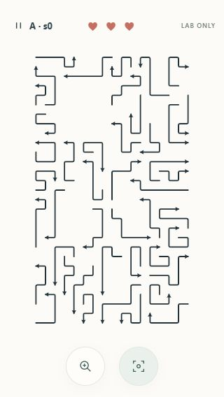
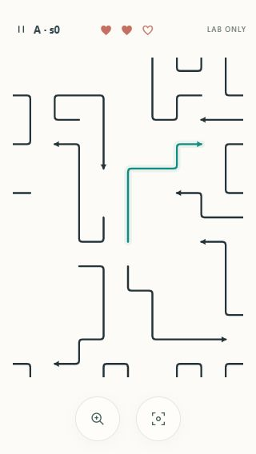
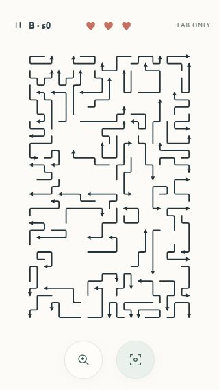
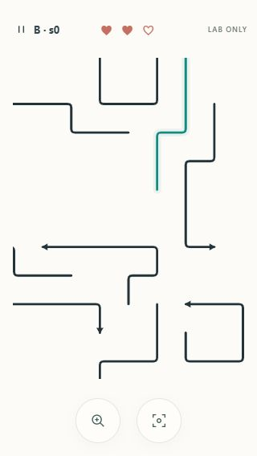
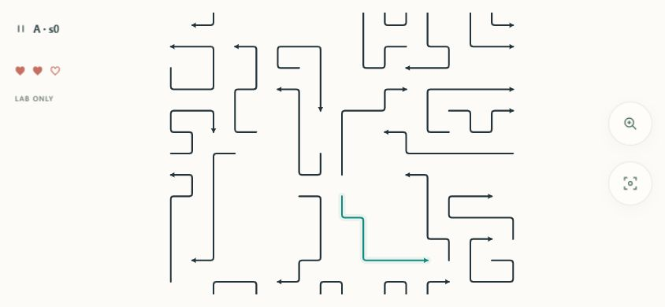
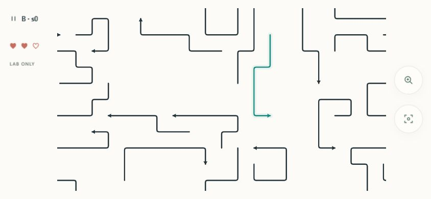

Actual browser captures · 390×844
Different puzzles, identical device dimensions. Original v1 is unchanged. V2 is an isolated research lab with real engine paths, no campaign changes or saves. These are screenshots, not mockups.

V1 Level 81 · 13×13 · 25 paths

A seed 0 · 17×29 · 44 paths

B seed 0 · 23×37 · 66 paths

B seed 0 · explicitly requested 85 paths
Small phone · 320×568

A overview · 13.57px/cell

A 2.25× · real selected path

B overview · 10.56px/cell

B 3.375× · real selected path
Landscape · 844×390

A 2.25×; tall geometry needs pan in landscape.

B 3.375×; no distorted cells or small framed Canvas.
Detailed handoff · Decisions and limitations · Play the dev-only research lab